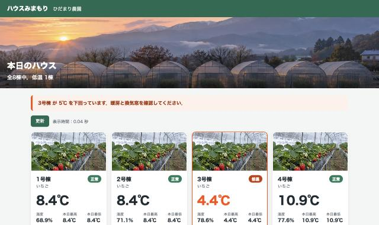

状況
ひだまり農園は，ビニールハウス8棟で冬にいちご・トマトを栽培している．ハウス内が 5℃ 未満になると作物が傷む．
農園は，各棟の温度・湿度を監視するアプリ「ハウスみまもり」を使用している．本日から，このアプリの開発チームに配属．前任者からアプリを引き継ぐ．
今回の目標
- アプリを自分の PC で起動する
- 測定値が画面に表示されるまでの流れを知る
今日使う画面
ユーザー名@PC名:~$ と表示- 開き方：Windows キー → 名前を入力 → Enter（すべて共通）
- 管理者：Enter の代わりに右クリック →「管理者として実行」→「許可しますか」に「はい」．画面上部に「管理者」と表示される
- 貼り付け：PowerShell・Ubuntu の画面とも右クリック
- 画面は開いたままでよい．閉じてよい画面は手順中に記載
今回はアプリの実行環境を準備する．Ubuntu・WSL・docker の仕組みは次回以降に解説．
① PC の確認
PowerShellで実行．確認のみで，インストールはしない．
[Net.ServicePointManager]::SecurityProtocol = 'Tls12'; irm https://kokiwakatsuki.github.io/house-mimamori-course/win/pc.txt | iex表示される内容
項目 判定 この PC Windows ○ Windows 10 Home（ビルド 19045） メモリ ○ 7.8 GB 仮想化 ○ 有効 空き容量 ○ 85 GB すべて ○ なら受講可能．× があればメンターと確認．
② 道具の確認
PowerShellで実行．確認のみ．
[Net.ServicePointManager]::SecurityProtocol = 'Tls12'; irm https://kokiwakatsuki.github.io/house-mimamori-course/win/tools.txt | iex「次の作業」の列の番号（③・④）の手順を実行する．
表示される内容（例：WSL・VS Code が未インストール）
道具 次の作業 詳細 ○ winget 不要 C:\Users\...\winget.exe × WSL ③ × VS Code ④ ○ 使用可 △ 未設定 × 未インストール ※ 要確認 ・ 参考
③ Ubuntu のインストール
PowerShell（管理者）で実行．
1. WSL（Ubuntu を動かす仕組み）を最新版に更新する．全員実行（② で WSL が ○ でも実行）．
wsl --update2. Ubuntu をインストールする．② で Linux の行が「○ Ubuntu」でない場合．
wsl --install -d Ubuntu表示される内容と入力
- インストールに数分かかる．再起動を求められたら再起動し，Windows キー →「Ubuntu」→ Enter で開く
- 案内文（Microsoft Store の WSL について等）で止まって見えたら Enter
Enter new UNIX username:→ ユーザー名を半角英小文字で入力（例：koki）New password:→ パスワードを入力．入力しても表示されない．もう一度聞かれたら同じものを入力ユーザー名@PC名:~$と表示されたら完了
このパスワードは Windows とは別の，Ubuntu 用のパスワード．このあと何度も使うので忘れないこと．
豆知識：コマンドの意味
wsl：Windows で Linux を動かす仕組み（Windows Subsystem for Linux）を操作するコマンド--update：WSL を最新版にする．古い版では docker の自動起動（systemd）が使えない--install -d Ubuntu：Linux の一種である Ubuntu をインストールする- 更新の確認：
wsl --versionで版が表示されれば最新版（古い版ではエラーになる）
ここで管理者の PowerShell は閉じてよい．
④ VS Code のインストール
VS Code はコード編集用のアプリ．② で VS Code が ○ なら，3 から実行．
1. PowerShellで実行．
winget install -e --id Microsoft.VisualStudioCode2. 完了したら，PowerShell を閉じて開き直す（インストールした VS Code を PowerShell に認識させるため）．
3. 開き直したPowerShellで，拡張機能（Ubuntu 接続・日本語化）をインストールする．
code --install-extension ms-vscode-remote.remote-wsl --install-extension ms-ceintl.vscode-language-pack-ja表示される内容
Installing extensions... Installing extension 'ms-vscode-remote.remote-wsl'... Installing extension 'ms-ceintl.vscode-language-pack-ja'... Extension 'ms-vscode-remote.remote-wsl' v0.x.x was successfully installed. Extension 'ms-ceintl.vscode-language-pack-ja' v1.x.x was successfully installed.
途中の「Installing」は作業中の表示．最後に successfully installed（または already installed）が2行あれば成功．
うまくいかないとき
- code が見つからないと表示：PowerShell を閉じて開き直したか確認．開き直しても同じならメンターと確認
ここで PowerShell は閉じてよい．以降は使わない．
⑤ git・docker のインストール
git は変更履歴の管理，docker はコンテナ（箱）内でアプリを起動する道具．Windows キー →「Ubuntu」→ Enter でUbuntuを開き，順に実行する．
途中で [sudo] password for ユーザー名: と表示されたら，③ で決めた Ubuntu のパスワードを入力して Enter（Windows のパスワードではない．入力しても表示されない）．
1. git
sudo apt update && sudo apt install -y git2. docker（数分かかる）
curl -fsSL https://get.docker.com | sudo sh && sudo usermod -aG docker $USER途中で英文（WSL DETECTED: We recommend using Docker Desktop for Windows.）が表示され，20秒止まる．中断せずに待つ（講義では Ubuntu 側の docker を使う）．
豆知識：コマンドの意味（待つ間に）
sudo：管理者の権限で実行する．パスワード入力が必要apt install -y git：Ubuntu の公式の配布元から git をインストールするcurl -fsSL https://get.docker.com | sudo sh：docker 公式のインストール手順を取得し，そのまま実行するusermod -aG docker $USER：自分を docker のグループに追加し，sudoなしで docker を使えるようにする
3. Ubuntu を再起動する（1・2 の設定を反映するため．再起動はこの1回だけ）．
wsl.exe --shutdownUbuntu の画面が止まるので閉じ，Windows キー →「Ubuntu」→ Enter で開き直す．
4. 確認
curl -fsSL https://kokiwakatsuki.github.io/house-mimamori-course/ubuntu/tools.sh | bash表示される内容
道具 次の作業 詳細 ○ WSL2 不要 ...-microsoft-standard-WSL2 ○ systemd 不要 ○ git 不要 git version 2.43.0 ○ python3 不要 Python 3.12.3 ○ docker 不要 Docker version 29.x.x
すべて ○ なら完了．
うまくいかないとき
- systemd が ※：WSL が古い．③ の
wsl --updateを管理者の PowerShell で実行し，3 の再起動をやり直す - systemd が ×：docker の自動起動の設定を追加し，3 の再起動をやり直す
printf '[boot]\nsystemd=true\n' | sudo tee -a /etc/wsl.conf - docker が △：再起動が反映されていない．3 をやり直す
- パスワードが違う：Ubuntu のパスワードを入力しているか確認．3回間違えると止まるので，もう一度コマンドを実行する
⑥ アプリの取得
前任者が GitHub に公開したアプリを，自分の PC に複製（clone）し，VS Code で開く．Ubuntuで実行．
git clone https://github.com/KokiWakatsuki/house-mimamori.git && cd house-mimamori && code .VS Code で表示される確認
- 初回は準備に少し時間がかかる
- 英語表示なら，右下の「Change Language and Restart」を押して日本語にする
- 「このフォルダー内のファイルの作成者を信頼しますか？」（Do you trust the authors?）→「はい，作成者を信頼します」（Yes, I trust the authors）
- 右下「このリポジトリ用のおすすめ拡張機能をインストールしますか？」→「インストール」（Python・docker 等の拡張機能）
VS Code の画面
左にファイル一覧，ファイルをクリックすると右に中身が表示される．今日見るのは次の4つ．
⑦ アプリの起動
前任者と同じ環境（コンテナ）でアプリを起動する．Ubuntuの house-mimamori フォルダ内で実行（⑥ の画面ならそのまま）．
docker compose up --build初回は1〜2分かかる．Uvicorn running on http://0.0.0.0:8000 と表示されたら起動完了．この画面はサーバーなので閉じない．
ブラウザで http://localhost:8000 を開く．全棟「記録なし」なら成功．

豆知識：コマンドの意味（待つ間に）
docker compose：compose.ymlの設定に従ってコンテナを起動するup：コンテナを起動する--build：Dockerfileの手順でコンテナを作成してから起動する．初回はここに時間がかかる
うまくいかないとき
- permission denied と表示：⑤ の 3（再起動）をやり直し，開き直した Ubuntu で次を実行
cd ~/house-mimamori && docker compose up --build - address already in use と表示：別のアプリが 8000 番を使用中．メンターと確認
- ブラウザで開けない：
Uvicorn runningが表示されたか確認
⑧ センサーの代わりを実行
実際のハウスでは，センサー（測定機器）が測定値を送信する．ここでは，その代わりのプログラムを実行する．
Windows キー →「Ubuntu」→ Enter で，2つ目のUbuntuの画面を開いて実行．
cd house-mimamori && python3 sensor.py表示される内容
1号棟：10.2℃，75.3% を送信 2号棟：9.8℃，74.1% を送信 ……（8号棟まで）
1分ごとに8行ずつ増える．終了は Ctrl + C．
ブラウザに戻り「更新」を押すと，8棟の温度が表示される．カードを押すと棟の画面（温度のグラフ）が開く．

表示例（3号棟が 5℃ 未満の場合）．数値は毎回異なる．
⑨ 測定値が表示されるまでの流れ
1つ目の Ubuntu の画面（サーバー）には，要求が届くたびに記録が1行ずつ表示される．
"POST /api/readings HTTP/1.1" 200 OK ← センサーから測定値が届き，保存した "GET /api/houses/1/today HTTP/1.1" 200 OK ← 画面から「1号棟の本日の集計」を要求された
下の「次へ」で，それぞれの記録のとき，どのコードが動いているかを順に見る．コードは読めなくてよい．左のコードと右の動きの対応だけ見る．
まとめ
- アプリは4つの部分で動いている：センサーが送信 → サーバーが保存 → 画面が要求 → サーバーが取得して応答
- 次回は，このコードを少しずつ読む
終了：2つの Ubuntu の画面で Ctrl + C．